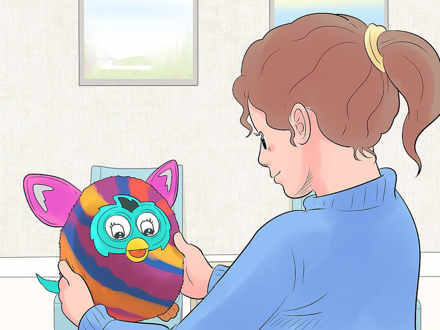
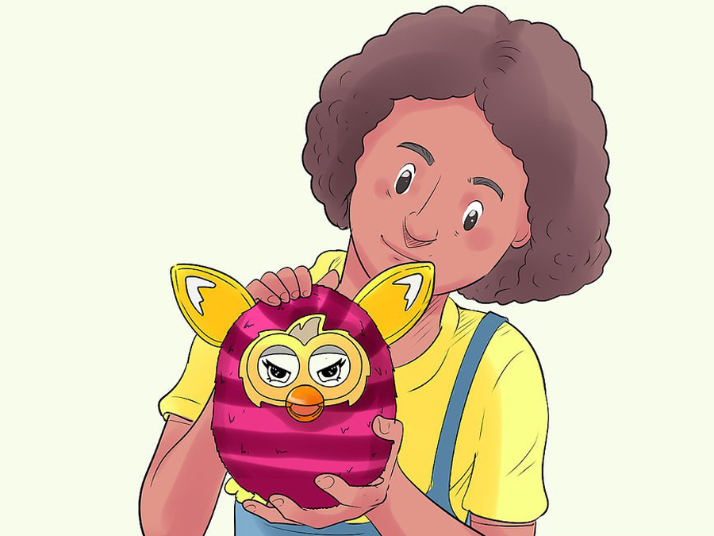
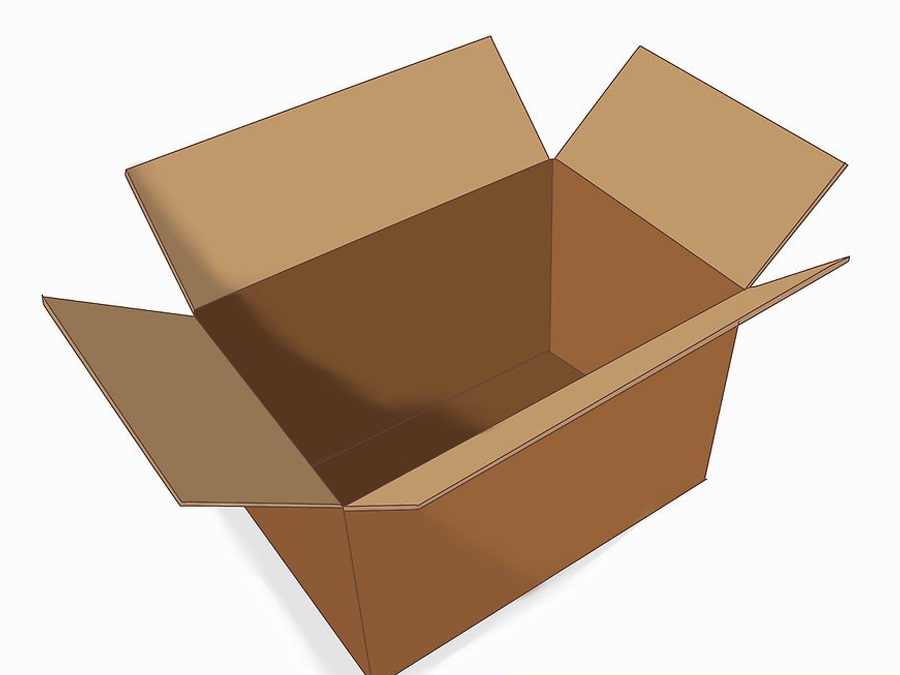

Do some research on the type of Furby you’d like. There are nine types of Furbys. There are the original 1998 Furbys, the 1999 Furby Babies, the 2001 Shelbys, the 2005 Emototronic Furbys, the 2012 Furbys, the Furby Party Rockerz, the Furby Booms, the Furblings, and Furbacca. Research pictures and videos of these Furbys to decide on a favorite. All of these are very different, and this is important to note when choosing your Furby.
of your Furby
DON’T
CLICK
HERE
How to choose the perfect Furby
1
2
Decide if you’d like an original 1998 Furby. Original 1998 Furbys are ideal for a new Furby owner. They are simple to operate and easy to learn to care for. If you decide on getting an original Furby, you can choose from seven different generations. Please note that many original Furbys will no longer start up when they are new in box. If you do not know how to repair a Furby, try finding one in working condition.
3
Decide if you’d enjoy caring for a toy more like a baby then a friend or pet. Furby Babies are very similar to original Furbys, except that they are smaller and have additional “baby” vocabulary. Furby Babies are best for more experienced owners, as they require more attention than most Furbys do. If you choose a Furby Baby, you have four generations to choose from. Like original Furbys, some new in box Babies no longer work.
4
Make a decision on whether you want a real Furby or a Furby Friend. If you’d like a Furby friend, then you might like a Shelby! The Shelby is a toy from the makers of Furby. Shelby is a clam, and was released in two different generations. Shelbys are also for the more experienced owner, as they do require lots of attention. Many Shelbys are still in working order, and you have a good chance of getting one to work from the box.
5
Decide if you’d like your Furby to be more interactive. Emototronic Furbys are the most interactive Furbys. The Emototronic Furby was a new variation of Furby which included more facial expression and voice recognition. These Furbys will respond to commands and are a good Furby for a first time owner, as they have an off switch and don’t require much care. There are many colors to choose from, and many of these Furbys are still in working order.
6
Decide whether you want an older Furby or a newer one. If you’d like a newer one, then the 2012 Furby is a great choice. 2012 Furby was a re-release of the original toy. 2012 Furby has LED eyes, and can change personalities. This Furby even has an app for Apple and Android devices, from which you can feed and communicate with the Furby. These Furbys are a bit harder to care for, and may not be a good choice for a first time owner. Almost all of these Furbys are still in working order and ready to play!
7
Think about whether you'd like a smaller Furby. Furby Party Rockerz were another toy released in the Furby line in 2013. They were smaller, and would become more wild when you shake them. They also respond to the Furby app. Despite their small size, Party Rockerz are quite difficult to care for, and are very sensitive to movement. They will often wake up if you walk past them. These Furbys come in a few different variations, and almost all still work. But this Furby may not be the best choice for a first time owner. If you are still interested in a small Furby, then a Furbling is a great choice. They aren’t the most interactive, and only respond when you pet its head. They come in all of the same colors as the Furby Boom, and are a great choice for a first time owner!
8
Decide if you’d like a colorful and modern Furby. The Furby Boom was released in 2013 and came in multiple colorful patterns. Like the 2012 Furby, Furby Boom has LED eyes and multiple personalities. Furby Boom has its own app, where you hatch and raise Furblings, as well as care for your Furby Boom. Furby Boom can also be very sensitive to movement, but is a good choice for an experienced owner. All of these Furbys will work unless they have some sort of manufacturing defect.
9
Decide if you’d like something slightly different than a classic Furby. Furbacca is a Furby based off of the Star Wars character, Chewbacca. It features Chewbacca’s shaggy brown fur, and belt. Furbacca even speaks Wookie! He has his own app, where you can hatch and raise Star Wars Furblings, as well as care for Furbacca. Furbacca is lots of fun, and is great for any Star Wars fan!
10
Once you've chosen which type of Furby you’d like to get, it’s time for you to get one!
11
Consider the price range you’d like to pay. If you are looking to pay less, then a used Furby may be best for you. If you are willing to pay a bit more, then you can get a Furby new in box.
12
Choose where you’d like to buy your Furby from. You can only find Furby Boom, Furbacca, and Furblings in stores. Any other Furby must be obtained online. EBay and Amazon are great places to find Furbys!
13
If you are looking for a guarantee that your Furby will work, buy a Furby in working order. But if you are up to the challenge of a repair, consider purchasing one new in box.
14
Order or purchase your Furby. If you ordered one, track the package so that you will know when your Furby will arrive. If you purchased one from a store, then you can just take it home!
15
Enjoy your Furby!
How to take care of your Furby
1
Name your Furby. If it’s a boy, name it Lucas, Kyle, Tyler, Maximus, Paul, etc. If it’s a girl, name it Lulu, Tina, Lindsey, Jamie, Sammy, etc. After all, you might get tired of saying “Furby”. Why not have something different? If you have an old Furby, find out about it's real name, and make a nickname if you want!
2
Find some cute clothes. You can make or buy headphones or a dress or a pair of glasses. Anything you really want; you can also leave your Furby without clothes.

3
Make your Furby a little home/bed. You can make it out of a box, buy a bed that fits him/her, or put some rags and a mini-pillow on one of your regular pillows.
4
Feed your Furby. For older Furbies, just press its tongue switch and it will eat. For newer Furbies, do the same. But you can also download The FURBY or FURBY BOOM app to your Apple, Android, or IOS device and feed Furby from there!
5
Play games with it like dance with it to music. Use the Furby Boom app with it. After that, you can feed it. You can do anything with Furby. If it is an old Furby, play Furby Says or Hide.
6
Watch a movie with your Furby. It’s a great bonding activity, and Furby may learn new words.
7
Listen to music with your Furby. Furbies love music. With a 1998 Furby, clap four times and it will dance for you. Just be careful, because if you have a 2012 Furby or Furby Boom, they might change into a personality you don’t like if you play too much music.
8
Be affectionate. Patting/petting your Furby will make your Furby happy. Petting a 1998 Furby will also make it sleep. With the 2012 Furby and Furby Boom, petting it a lot will lead to a cute, baby personality!
9
Talk to your Furby a lot. How else will it learn your language? You need to teach it!
10
Have fun with your Furby. Furbies are all about having fun. Talk to it, pretend you’re on an adventure with it, anything is possible!
11
Clean your Furby if it gets soiled or dirty. To do this, you must use Lysol wipes to clean his/her ears, beak, and feet. After that, use a non-plastic bristle brush to brush every part of his/her body.
How to your Furby evil
1
Set your Furby down in front of you. If you have not activated or woken your mix up, do so now. Note that this method only works on your mixel. If you have a Furby Boom (2013), click here. If you try this method on a Furby Boom, you will get a Jolly Furby instead.
2
Place your finger in your Furby’s mouth, and press down on the tongue gently. Overfeeding your Furby is the fastest way to turn it evil.
3
Wriggle your finger in the Furby’s mouth for 1 minute. This will make the Furby think you are feeding it nonstop. Your Furby may start to cry or complain. Don't stop. Remember, overfeeding your Furby is what turns it evil.
4
Wait for your Furby to go crazy before taking your finger out of its mouth. Your Furby will start making weird noises, and its eyes will turn white. It will shake and act “crazy”. After a few moments, your Furby’s eyes will turn into evil, slanted eyes.
5
Enjoy your evil Furby! It will act very grumpy, and snap at you if you try to pet it. If you’d like to make your Furby nice again, try talking to it a lot, or playing a lot of music. Some people find that this may take up to 10 or 15 minutes. You can also try petting it a lot; eventually it will turn nice again.

6
Set your Furby Boom down in front of you. The Furby Boom’s evil personality is called “Feisty”. Many people claim that this Feisty personality is similar to the Furby 2012’s Evil or Viking personality.
7
Turn the Furby upside down. Your Furby may think this is funny at first and giggle or laugh. Don’t worry, it will eventually turn evil.
8
Turn the Furby right side up. Again, your Furby may think that this is funny. It will soon change its mind, however.
9
Keep flipping the Furby upside down and right side up. After about a minute or so of flipping, your Furby will decide that it's had enough and it will turn Feisty. It will have evil, slanted eyes with girly lashes.

10
Enjoy your evil Furby. If you'd like to turn your Furby nice again, try give it lots of hugs. You can also try petting it a lot. Some people find that pulling its tail often also changes its personality.
How to quick start a 1998 Furby that won't start up
1
Remove the fur and shell from Furby. You should be able to see the wiring.
2
Find the motor. To the right of Furby’s beak, you will see a silver and red, cylinder shaped mechanism. That’s it.
3
Get something small, like a small screwdriver or pen cap.
4
Spin the motor to the right a good couple dozen times.

5
Find the gear. It’s small and gray, and located to the left side of Furby’s beak.
6
Using your small object, spin this gear to the right for about 10 minutes.
7
Once you’ve spun it enough, put batteries in Furby. He should start right up and be ready to play!
8
Push down the beak. You should be able to see inside.
9
Get a small flathead screwdriver. A phillips head works fine as well, but a flathead is easier to use.
10
Insert the screwdriver to the left of the beak and push it down as far as it can go.
11
Spin your screwdriver to the left. If you are in the right spot, then you should be at the gear mentioned in the previous method. To know if you are in the right spot, look at Furby's ears and eyelids. They should move slightly every time you spin the screwdriver.

12
Once you feel that you have spun it enough, put batteries into Furby. Most likely he will start right up!
Furby's anatomy

BASE
The base is like a chair. I allows him to stand up. But it’s also a sensor that wake up the Furby everytime you move him.
PLASTIC MOUTH
This harmonious round mouth not only serve to speak, but also to feed the Furby of course.
CRAZY EYES
Be aware ! This crazy eyes are hypnotic and have the power to drive you mad. Don’t be scared, Furbys are (most of the time) enjoyable creatures. Just remember don’t look during a long time their eyes. You cannot say I didn’t warn you.
FAKE LASHES
Those wonderful lashes can make jealous everybody even Kim Kardashian ! The perfect shape and density bring more hypnotism to their eyes.
FLUFFY EARS
The ears show the mood of your Furby moving them back and forth. Some Furbys have plastic ears instead of hairy ones.
HEART MOTOR
Here is where everything happens. The brain of your Furby, or commonly said the heart. The complex mechanism allows to your Furby to express all kind of emotions.
HYPNOTIC VOICE
The vocal cords are positioned inside of the stomac. Directly connected to his brain; his melodic voice allows your Furby to communicate and makes you obey all his desires.
SWEET COAT
It’s the skin. This fluffy coat protect your Furby not only from cold but also makes part of his identity. Pink, blue, multicolor, dots, lines… and all variants you can imagine.
HAIR
Same as the coat; hair is an important identity characteristic. Don’t forget to brush him and your Furby will be happy.
PAWS
Bad news... (or good ones ?) a Furby cannot walk. As horrible as it’s sound Furby paws are juste decorative and only have the goal to make him look more like an animal. But don’t worry. He cannot walk but he can roll!
SENSOR
The sensor helps the Furby to feel your mood and the vibrations around him. This influences his mood and emotions.
How to build a room for your Furby

1
Find a nice big cardboard box. Set it out in some free space of your room.
2
Make a carpet for your stuffed animal’s room. Choose fabric that is nice and soft, such as polar fleece or an old unwanted woolen/cashmere sweater or even a unwanted blanket.
3
Finger paint words onto the walls. Add words such as the stuffed animal’s name, initials or words that correspond with its personality. You can draw pictures too!
4
Make a bed for the stuffed animal. This could be a scarf, folded up. You could tuck any fabric inside a small box to make an easy bed.
5
If you have cardboard flaps that you’re using as doors, measure out the length of your pet. Go around it in tape; make sure it’s bigger than your stuffed animal. Paint it, cut and take the tape off. Add to the box, so that your stuffed animal can get in by itself.
6
Add some furniture. If you have old dollhouse furniture, add that to the house. Cut paper to size fold over a small part of it and glue it to the wall like the table.
7
Put your animal inside. Throw a housewarming party to make your little friend feel loved.
8
Find an empty laundry basket. If you can’t find one, ask your parent or guardian for help. Or just buy one.
9
Put a blanket for the carpet on the floor of the basket. It doesn’t have to be brand new.
10
Make a bed out a small cloth folded up.
11
If you have some Styrofoam, cut out a square. Put that square next to the furby’s or stuffed animal’s bed to serve as a side table. Put a book, lamp and things onto it.
12
Feed the stuffed animal. Then put it down for a nap.
13
Open up your chosen drawer. Check if you have enough space for your Furby. The best type of drawer would be the one in your bedside table or any drawer in your bedroom.
14
Place a soft fabric inside your drawer. If you’re allowed to, stick the fabric to the floor of your drawer with hot glue. Velvet or silk would work best as the lining fabric.
15
Add a bed. Make a bed by making a small pillow, the size of your Furby’s head, and placing some leftover fabric on top of a small bed. Then place the pillow on top. If you want to make a blanket too, make it the size of your Furby’s body.
16
Add some furniture. If you have little doll house furniture, you might want to use it. If you have a torch, add it in one corner and turn it on while your Furby’s inside. Do this just before bedtime, and turn it off when your Furby goes to sleep.
17
Before putting your Furby to sleep or to play inside its little house, groom it. Wipe only its fur with a barely dampened cloth, then brush your furby’s fur and hair. Now let your Furby enjoy its new house.